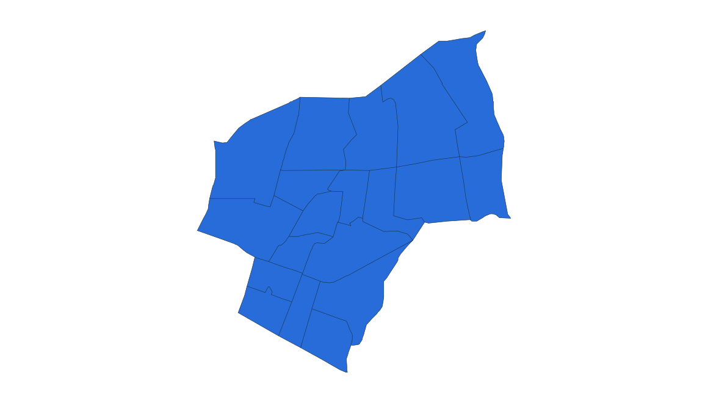
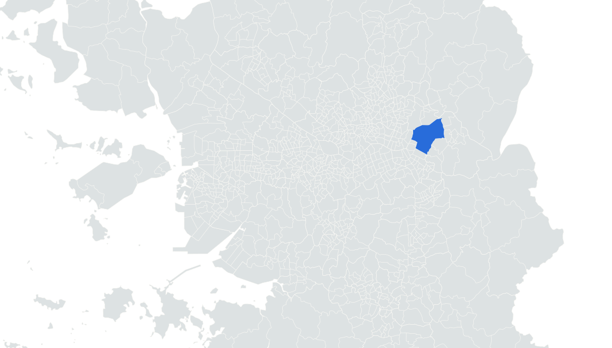

부동산 데이터 | 신혼부부가 사는 곳
7위 서울 강동구
2024.11.1 거주 기준 · 신혼부부 전체 · 단위: 쌍

고덕역 4번출구와 주변 가로
실제 장소 자료사진 · 촬영 2018
사진: LERK · CC BY-SA 4.0
거주 신혼부부
9,287쌍


강동구 경계
수도권 내 위치
앞뒤 순위 · 같은 0–16,000쌍 척도
05
???
???
06
???
???
07
강동구
9,287
08
영등포구
9,036
09
분당구
8,587
통계: 통계청 「2024년 신혼부부통계」 수도권 구별 집계 | 지도: SGIS · vuski/admdongkor, CC BY 4.0 · 2024 경계